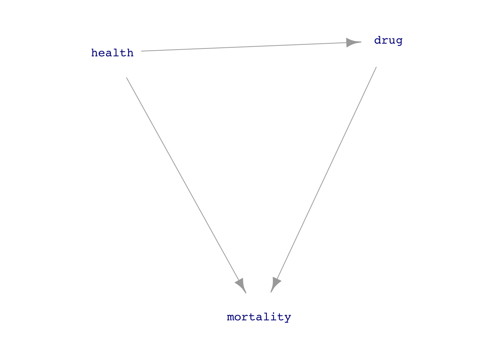

Lesson 23 introduced Directed Acyclic Graphs (DAGs) to express our ideas about what causes what. Our first use for DAGs was to visualize the connections between the variables in a simulation.
This Lesson covers an important application for DAGs when building useful models with data: DAGs can help us choose covariates for models in a way that respects what we want to find out about a particular causal connection between an explanatory variable and the response variable.
As you saw in Lessons 14 and 23, we can define a DAG by listing all the direct causal connections between nodes. Using the simulation notation to illustrate, here is a simple simulation of the influence of a medical drug on mortality, where the medical drug is presumed to reduce mortality, but where the only patients prescribed the drug are those who are unhealthy.
drug_mortality_sim <-datasim_make(1 health <-rnorm(n),2 drug <-- health +0.5*rnorm(n),3 mortality <-- drug -2* health +rnorm(n))
1
Outside factors determine the health of the person. Presumably, these relate to risk factors such as age, genetics, lifestyle, and so on, but the simple model doesn’t go into detail; a person’s health is assigned randomly. A bigger number indicates better health.
2
In the simulation, whether or not the person takes the drug depends on the subject’s health. People who are in good health are not prescribed the medication. This is why there is a negative sign in the drug <- - health mechanism.
3
The general health of the patient influences mortality: the better the health, the lower the mortality. This is why there is a negative sign in front of health for the mortality variable. Similarly, if the patient is prescribed and takes the drug, the patient’s mortality is lower.
Figure 24.1 presents the simulation as a DAG. Every variable on the left-hand side of <- has an input from all the variables mentioned on the right-hand side. For instance, mortality has two inputs: from drug and from health. But health has no inputs because no variables are mentioned on the right-hand side of the <- for health.

Figure 24.1: The drug_mortality_sim drawn as a DAG.
Suppose the question of interest is whether the drug improves mortality. A simple design for this study is to sample many people, noting for each person whether they take the drug and whether the person died in the next, say, five years. With the data in hand, we’ll build a model, mortality ~ drug and check whether the effect size of drug on mortality is positive (harmful drug!) or negative (drug reduces mortality).
Our intention with mortality ~ drug is to probe the direct causal link between drug and mortality. But will we achieve our intention with the model mortality ~ drug? There is a difficulty in this example: the direct drug\(\rightarrow\)mortality causal link is only one of the pathways between drug and mortality. The other pathway is drug\(\leftarrow\)health\(\rightarrow\)motality. When we model mortality ~ drug, will we be studying just the direct link, or will the other pathway get involved? This is the sort of question we will address in this Lesson, as well as how to block a pathway that we don’t intend to study because we are interested in the pharmacological action of the drug, not the role of health in determining mortality.
A DAG is a hypothesis
The simulation and DAG picture in the above example are made up. They reflect our idea of how a drug might be related to mortality. The word we will prefer for such ideas is “hypothesis,” although “theory”, “speculation,” or “assumption” would serve almost as well.
A hypothesis is a statement that might or might not be true. A common purpose for a hypothesis is to organize thinking around an assumed state of the world. But just because we assume a hypothesis, does not mean the hypothesis is true. Any conclusions that we draw from hypothetical thinking are conditioned on the assumption; they should not be regarded as a definitive statement about the world.
The author F. Scott Fitzgerald (1896-1940) famously wrote:
“The test of a first rate intelligence is the ability to hold two opposed ideas in the mind at the same time, and still retain the ability to function.”
The statistical thinker is often in the position of having to keep in mind two or more hypotheses about the causal connections in a system. Different hypotheses may lead to different conclusions. DAGs provide a way to write down a causal hypothesis and, as we will see, choose appropriate covariates for uncovering a particular causal link or pathway. When different hypotheses lead to different choices of covariates, the statistical thinker has to retain the ability to function, recognizing the conditional truth of the conclusions derived from each hypothesis. Ideally, when faced with contradictory conclusions conditioned on different hypotheses, the statistical thinker can use a clever choice of covariates or an experiment (Lesson 26) to resolve the issue.
Pathways
A DAG is a network. In a complicated roadway network like the street grid in a city or the highway system, there is usually more than one way to get from an origin to a destination. In the language of DAGs, we use the word “pathway” to describe a particular route between the origin and destination. Even a simple DAG, like that in Figure 24.1, can have multiple pathways, like the two we identified in the previous section between drug and mortality.
A good metaphor for a DAG is a network of one-way streets. On a one-way street, you can drive your car in one direction but not the other. In a DAG, influence flows in only one direction for any given link.
The one-way street network metaphor fails in an important way. Influence is not the only thing we need to keep track of in a DAG. Information is another entity that can seem to “flow” through a DAG. To illustrate, consider this simple DAG:
\[Y \leftarrow C \rightarrow X\] In this DAG, there is no way for influence to flow from X to Y; the one-way links don’t permit it. We have used water as an analogy for causal influence. For information, we need another analogy. Consider ants.
We will allow the ants to move in only one direction along a link. So in \(Y \leftarrow C \rightarrow X\), ants can move from C to Y. They can also move from C to X. But an individual ant is powerless to move from X to Y or vice versa.
A particular property of ants is that we don’t usually consider them individuals but a collective, a colony. When we see ants in two different places, we suspect that those two places are connected by some ant pathway, even if we can’t figure out whether the ants originated in one of the places or the other.
In the \(Y \leftarrow C \rightarrow X\) network, an ant colony at C can generate ant sightings at both X and Y even though an individual ant can’t move from X to Y. That is, \(Y \leftarrow C \rightarrow X\) has an ant connection between Y and X and vice versa.
Our data consists only of ant sightings. Two variables being connected is indicated by simultaneous ant sightings at each of the two nodes representing the variables. We will call the type of connection where ants can show up at two nodes a “correlating pathway” between the two nodes.
\(Y \leftarrow C \rightarrow X\) is a correlating pathway between X and Y. So is \(Y \leftarrow C \leftarrow X\). But \(Y \leftarrow C \leftarrow X\) is also a causal pathway. When an individual ant can travel from X to Y, we have a causal pathway. But we have a correlating pathway when ants from the same colony can appear at X and Y. Every causal pathway is also a correlating pathway because if an individual ant can travel from X to Y, then ants from the same colony can be sighted at both X and Y.
There is another kind of pathway: the non-correlating pathway. With a non-correlating pathway between X and Y, there is no way for ants from the colony to show up at both X and Y. For example
\[\text{Non-correlating pathway: }\ Y \rightarrow C \leftarrow X\] Try it out. Is there any single node where you can place an ant colony and get ant sightings at both X and Y? If not, you’ve got a non-correlating pathway.
Correlating pathways create connections between two variables, X and Y, even when there is no causal influence that runs from X to Y. This becomes a problem for the data analyst, who is often interested in causal connections but whose tools are rooted in detecting correlations between variables.
Correlation is causation
Conventional statistics courses emphasize this motto: “Correlation is not causation.” This is true to the same extent that ants and water are different things: ants are not water.
Suppose we detect a correlation between X and Y, e.g. a non-zero coefficient on X in the model Y ~ X. In that case, a causal connection provides a reasonable explanation for the correlation. But we can’t say what the direction of causation is just by analyzing X and Y data together. Even a correlating pathway is constructed out of causal segments.
The challenge for the statistical thinker is to figure out the nature of the causal connections from the available data, that is, the flow of an appropriate DAG.
If our data include only X and Y, the situation is hopeless. A non-zero coefficient for the Y ~ X model might be the result of a causal path from X to Y, or a causal path from Y to X, or even a correlating pathway between X and Y mediated by some other variable C (or multiple other variables, C, D, E, etc.). Similarly, a zero coefficient for the Y ~ X model is no guarantee that there is no causal connection between them.
Blocking correlating and non-correlating pathways using covariates
Here is a DAG with links drawn in different colors to help distinguish the direct link between X and Y, which is drawn in black, and the backdoor pathway involving node C is drawn in green.
Our interest in DAGs relates to a question: should a covariate C be included in a model when the purpose is to study specifically the direct relationship from X to Y? The answer, to be demonstrated experimentally below, is simple.
If the backdoor pathway is correlating, include covariate C to block that pathway. On the other hand, if the backdoor pathway is non-correlating, including covariate C will unblock the pathway. Consequently, for non-correlating backdoor pathways, do not include covariate C.
In this section, we will conduct a numerical experiment to look at three simple arrangements of backdoor X-C-Y pathways. For each pathway, the experiment consists of 1) making a simulation, 2) generating data from that simulation, and 3) modeling the data in two ways: Y ~ X and Y ~ X + C. We can then check whether including or excluding the covariate C in the model reveals any connection between X and Y.
In each of the three cases, the direct causal link between X and Y will have an X multiplier of \(-1\). This makes it easy to check whether the model coefficient on X is correct or whether the backdoor pathway interferes with seeing the direct X \(\rightarrow\) Y pathway.
Experiment A: Mediated causal backdoor pathway
\[X \rightarrow C \rightarrow Y\]
pathA <-datasim_make( X <-rnorm(n), C <-1* X +rnorm(n),1 Y <-2* C +rnorm(n) - X)
1
Note: The - X is the direct causal connection between X and Y.
dataC |>model_train(Y ~ X + C) |>conf_interval() |>select(term, .coef)
term
.coef
(Intercept)
-0.0008783
X
-0.6010068
C
0.3997287
Incorrect result: X should be \(-1\).
To summarize the three experiments:
Experiment
Pathway
Correlating pathway?
Include covariate?
A
\(X \rightarrow C \rightarrow Y\)
Yes
Yes
B
\(X \leftarrow C \rightarrow Y\)
Yes
Yes
C
\(X \rightarrow C \leftarrow Y\)
No
No
The word “collider” is preferred by specialists in causality to describe the situation I’m calling a “common consequence.”
DAGs and data
People often disagree about what causes what. Ideally, you could use data to resolve such disputes. Under what conditions is this possible?
The question arises because there can be situations where it can be impossible to resolve a dispute purely through data analysis. We can illustrate a very simple system: \(Y \leftrightarrow X\). By this, we mean any of the following three systems:
\(Y \leftarrow X\). Let’s suppose this is Ava’s view.
\(Y \rightarrow X\). Let’s suppose Booker holds this view.
No connection at all between X and Y. Cleo holds this view.
Simulation allows us to create a world in which the causal connections are exactly known. For example, here is a simulation in which Y causes X.
XYsim <-datasim_make( Y <-rnorm(n), # exogenous X <-2* Y +rnorm(n))
Imagine three people holding divergent views about the nature of variables X and Y. They agree to resolve their disagreement by collecting data from X and Y, collecting many specimens, and measuring X and Y on each.
In a real-world dispute, concerns might arise about how to sample the specimens and the details of the X and Y measurement techniques. Such concerns suggest an awareness that factors other than X and Y may be playing a role in the system.The correct course of action in such a case is to be explicit about what these other factors might be, expand the DAG to include them, and measure not just X and Y but also, as much as possible, other covariates appearing in the DAG.
Nevertheless, we will show what happens if the parties to the dispute insist that only X and Y be measured. Let’s play the role of Nature and generate data for them:
XYdata <- XYsim |>sample(n=1000)
Ava goes first. “I think that X causes Y. I’ll demonstrate by fitting \(Y ~ X\) to the data.
“You can tell from the X coefficient that X influences Y,” says Ava.
Unexpectedly, Cleo steps in to point out that the coefficient of 0.4 might just be due to accidental alignments of the unconnected X and Y variables.
Ava, who has already read Lesson 20, points out an accepted way to assess whether the 0.4 coefficient might be an accident: look at the confidence intervals.
Ava_model |>conf_interval()
term
.lwr
.coef
.upr
(Intercept)
-0.022
0.0053
0.033
X
0.380
0.4000
0.410
The ends of the confidence interval on the X coefficient are far from zero; the interval refutes any claim that the X coefficient is actually zero. “Moreover,” Ava gloats, “my model’s R2 is 78%, very close to 1.”
Those with previous exposure to statistics methods might be inclined to say that the “p-value is small.” This is equivalent to saying that the confidence interval is far from zero. In general, as Lesson 29 discusses, it’s preferable to talk about confidence intervals rather than p-values.
Ava_model |>R2()
n
k
Rsquared
F
adjR2
p
df.num
df.denom
1000
1
0.7966153
3908.956
0.7964115
0
1
998
Now Booker speaks up. “I don’t understand how that could be right. Look at my \(X ~ Y\) model. My R2 is just as big as yours (and my coefficient is bigger).”
Neither Booker’s nor Ava’s models can resolve the dispute between them. Data can’t speak for themselves about the direction of influence. Model-building methods (with a large enough sample size) are helpful in showing whether there is a connection. For instance, either Booker’s or Ava’s results refute Cleo’s hypothesis that there is no connection between X and Y. But models, on their own, are powerless to show the direction of influence.
For more than a century, many statisticians did not carry the issue beyond the simple \(Y \leftrightarrow X\) example. It became dogma that the only way to establish causation is to experiment, that is, for the researcher to intervene in the system to sever causal influences. (See Lesson 26.) You will still see this statement in statistical textbooks, and news reports will endorse it by identifying “Random controlled trials” as the “Gold Standard” of causal relationships.
See this article in the prestigious British journal The Lancet to appreciate the history and irony of “gold standard.”
Although \(Y \leftrightarrow X\) systems provide no fulcrum by which to lever out the truth about the direction of influence, richer systems sometimes present an opportunity to resolve causal disputes with data. The choice of covariates via DAGs provides the necessary key.
Causal nihilism and smoking
Often, but not always, our interest in studying data is to reveal or exploit the causal connections between variables. Understanding causality is essential, for instance, if we are planning to intervene in the world and want to anticipate the consequences. Interventions are things like “increase the dose of medicine,” “stop smoking!”, “lower the budget,” “add more cargo to a plane (which will increase fuel consumption and reduce the range).”
Historically, mainstream statisticians were hostile to using data to explore causal relationships. (The one exception was experiment, which gathers data from an actual intervention in the world. See Lesson 26.) Statistics teachers encouraged students to use phrases like “associated with” or “correlated with” and reminded them that “correlation is not causation.”
Regrettably, this attitude made statistics irrelevant to the many situations where intervention is the core concern and experiment was not feasible. A tragic episode of this sort likely caused millions of unnecessary deaths. Starting in the 1940s, doctors and epidemiologists saw evidence that smoking causes lung cancer. In stepped the most famous statistician of the age, Ronald Fisher, to insist that the statement should be, “smoking is associated with lung cancer.” He speculated that smoking and lung cancer might have a common cause, perhaps genetic. Fisher argued that establishing causation requires running an experiment where people are randomly assigned to smoke or not smoke and then observed for decades to see if they developed lung cancer. Such an experiment is unfeasible and unethical, to say nothing of the need to wait decades to get a result.
Fortunately, around 1960, a researcher at the US National Institutes of Health, Jerome Cornfield, was able to show mathematically that the strength of the association between smoking and cancer ruled out any genetic mechanism. Cornfield’s work was a key step in developing a new area in statistics: “causal inference.”
Causal inference is not about proving that one thing causes another but about formal ways to say something about how the world works that can be used, along with data, to make responsible conclusions about causal relationships.